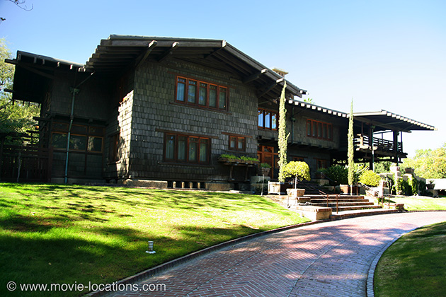
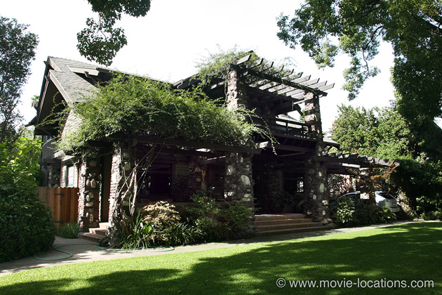
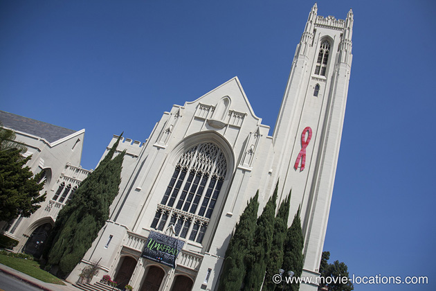
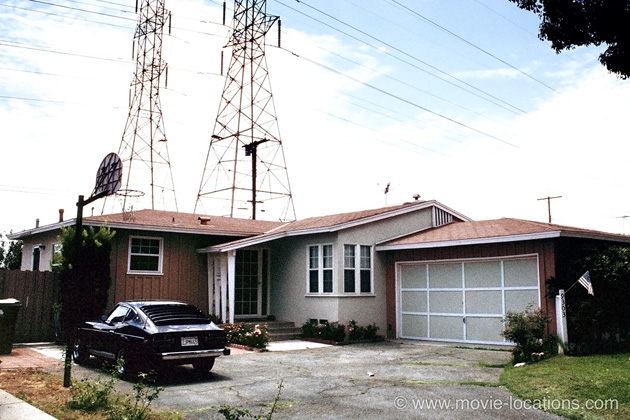

Back To The Future
Main Content

Marty McFly (Michael J Fox) has to engineer his own parents’ romance after being whisked back from the 1980s to the 1950s in this enjoyably slam-bang fantasy film. The setting of ‘Hill Valley’ is fictitious, and the town square is a much-re-used set on the backlot of Universal Studios Hollywood, but many of the other locations can be found around Los Angeles.
The striking home of Doc Emmett Brown (Christopher Lloyd), ‘1640 Riverside Drive, Hill Valley’, is one of the great architectural joys of Los Angeles, the 1908 Gamble House, 4 Westmoreland Place in Pasadena, just a little to the south of the Pasadena Historical Society.
Built for the Gamble family (as in Proctor and...), this charming, Japanese-influenced wood shingle house is open to the public for tours.
The Doc’s workshop, where the time-travelling DeLorean is stored, is actually the Gamble House bookshop, alongside the main house.
The front door on which Fox knocks, though, and the house interior, is the 1907 RR Blacker House, a similar Japanese-inspired design by Charles and Henry Greene, at 1177 Hillcrest Avenue, Oak Knoll, Pasadena. If you’ve seen the deleted scenes on the Armageddon DVD, you’ll recognise the Blacker as the house where Bruce Willis bids goodbye to his dad.

The Fifties neighbourhood of Marty’s parents-to-be is also Pasadena. The house of George (Crispin Glover), where Marty pays a nighttime visit as Darth Vader, is 1711 Bushnell Avenue in South Pasadena.
Supposedly just across the street (but a few doors along on the same side) is the home of Lorraine (Lea Thompson), outside which Marty gets hit by a car while saving George: 1727 Bushnell Avenue.
A few miles further south you’ll find ‘Hill Valley High School’, down in Whittier, southeastern Los Angeles, hometown of Richard Milhaus Nixon. And indeed the school, Whittier Union High School, 12417 Philadelphia Street at Pierce Avenue, is where Tricky Dickie graduated in 1930.

The ‘Enchantment Under The Sea’ dance, though, where Marty finally unites his parents and invents rock’n’roll, was filmed in Hollywood, in the gymnasium of the First United Methodist Church of Hollywood, 6817 Franklin Avenue. You can see the church’s exterior in the period Hollywood scene in The Godfather.
Back to the Eighties. The Doc’s house in 1985 (the garage of the old mansion, which supposedly burned down) was constructed for the film behind Burger King, 535 North Victory Boulevard, Burbank (a stretch of road seen in Christopher Nolan’s film Memento). It's from here that Marty heads off to school at the beginning of the film.
To the east of Whittier, in the anonymous sprawl of industrial estates aptly called City of Industry, is the ‘Twin Pines Mall’ where Doc Emmett gets gunned down by irate Libyans. It’s the Puente Hills Mall on the southeast corner of the Pomona Freeway exit, Highway 60, at Azusa Avenue.

The Eighties McFly ‘Lyon Estates’ home is beneath the power pylons of Arleta in the San Fernando Valley. It’s 9303 Roslyndale Avenue, a quiet sidestreet off Sunburst Street.
Visit Info
Visit The Film Locations
California | Los Angeles
Visit: Los Angeles
Flights: Los Angeles International Airport (LAX), 1 World Way, Los Angeles, CA 90045 (tel: 424.646.5252)
Travelling around: Los Angeles Metro
Visit: the Gamble House, 4 Westmoreland Place, Pasadena, CA 91103 (tel: 626.793.3334)
Visit: Universal Studios Hollywood, 100 Universal City Plaza, Universal City, CA 91608 (tel: 800.864.8377)